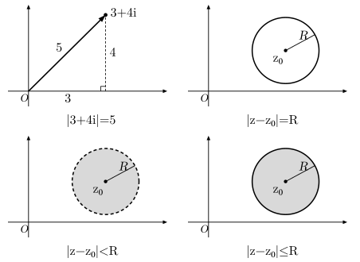
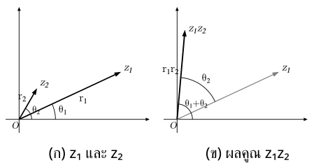

. รูป และหน่วยจินตภาพ
ในจำนวนจริง สมการ ไม่มีคำตอบ จึงกำหนดจำนวน ที่มีสมบัติ แล้วเขียนจำนวนเชิงซ้อนเป็น
บทนิยาม: จำนวนเชิงซ้อนเขียนในรูป เมื่อ และ เป็นจำนวนจริง
- ส่วนจริง คือ เขียน
- ส่วนจินตภาพ คือ เขียน โดยส่วนจินตภาพเป็นจำนวนจริง ไม่ใช่
- ถ้า จะได้จำนวนจริง จึงมองจำนวนจริงเป็นส่วนหนึ่งของจำนวนเชิงซ้อนได้
- ถ้า และ จะเป็นจำนวนจินตภาพแท้
เช่น มีส่วนจริง และส่วนจินตภาพ
จำนวนเชิงซ้อนเท่ากันเมื่อ ส่วนจริงเท่ากันและส่วนจินตภาพเท่ากัน จึงแยกเป็นสองสมการจำนวนจริงได้
กำลังของ วนทุกสี่กำลัง:
กำลัง ที่เลขชี้กำลังเป็นจำนวนเต็มไม่ลบ: หารด้วย เศษ ให้ค่า
ระวัง: โดยทั่วไปไม่ใช้เครื่องหมายมากกว่า–น้อยกว่าเปรียบเทียบจำนวนเชิงซ้อนโดยตรง ถ้าโจทย์ให้เงื่อนไขแบบนี้ ให้ดูว่าเปรียบเทียบส่วนจริง ส่วนจินตภาพ หรือมอดุลัส
. การดำเนินการและสังยุค
การบวกและลบทำแยกส่วนจริงกับส่วนจินตภาพ ส่วนการคูณกระจายเหมือนพหุนามแล้วใช้
บทนิยาม: สังยุคของ คือ เปลี่ยนเครื่องหมายเฉพาะส่วนที่คูณ จึงมี
การหารให้คูณทั้งเศษและส่วนด้วยสังยุคของตัวส่วน เพื่อให้ตัวส่วนเป็นจำนวนจริง:
เมื่อ
กระจายเศษ แยก แล้วหารส่วนจริง/จินตภาพด้วยตัวส่วนเดียวกัน:
อ่านส่วนจริงจากพจน์แรก ส่วนจินตภาพจากสัมประสิทธิ์
สังยุคของผลบวก/ผลคูณ เท่ากับผลบวก/ผลคูณของสังยุค
ระวัง: การคูณด้วยสังยุคเพื่อจัดรูปผลหาร ต้องคูณทั้งเศษและส่วน และห้ามหารด้วยจำนวนเชิงซ้อนศูนย์
. ระนาบเชิงซ้อน มอดุลัส และระยะ
แทน ด้วยจุด บน ระนาบเชิงซ้อน แกนนอนคือส่วนจริง แกนตั้งคือส่วนจินตภาพ หรือมองเป็นลูกศรจากจุดกำเนิดไปจุดนั้นได้
สังยุค อยู่ที่จุด จึงเป็นภาพสะท้อนของ ผ่านแกนจริง
บทนิยาม: มอดุลัสคือระยะจากจุดกำเนิดถึงจุด เขียน และหาได้จาก
เช่น จึงมี และ
ถ้าโจทย์ให้ มาแล้ว จะมี อย่าแทนมอดุลัสเป็น โดยไม่ยกกำลังสอง
ระยะระหว่างจุด กับจุด คือ ถ้า เป็นจุดคงที่และ จึงอ่านเงื่อนไขได้ว่า
| เงื่อนไขระยะ | บริเวณ |
|---|---|
| วงกลมศูนย์กลาง รัศมี | |
| บริเวณภายในวงกลม ไม่รวมเส้นรอบวง | |
| บริเวณภายในรวมเส้นรอบวง |

สมบัติที่ใช้บ่อย ได้แก่
และ เมื่อ
ระวัง: โดยทั่วไป ไม่เท่ากับ เพราะต้องดูตำแหน่งและทิศทางของจุดด้วย
. รูปเชิงขั้วและการเลือกมุม
เมื่อ ให้ และให้ เป็นมุมที่วัดจากแกนจริงด้านบวกไปยังลูกศร ทวนเข็มนาฬิกา จะเขียนได้ว่า
บทนิยาม: ใช้ จึงเขียนรูปเชิงขั้วได้สั้น ๆ ว่า
โดย และ มุม เรียกว่า อาร์กิวเมนต์ ของ
มุมที่ต่างกันเป็นจำนวนเต็มรอบให้จำนวนเดิม เช่น กับ จึงต้องดูช่วงมุมที่โจทย์กำหนด ถ้าให้เลือกหนึ่งมุมในช่วง ให้หาจตุภาคจากเครื่องหมายของ และ ก่อน
| จตุภาค | ช่วงของ | ||
|---|---|---|---|
| บวก | บวก | ||
| ลบ | บวก | ||
| ลบ | ลบ | ||
| บวก | ลบ |
ถ้าจุดอยู่บนแกน ให้ใช้มุมของแกนนั้นโดยตรง ไม่จัดลงจตุภาค ถ้า ใช้ ช่วยหามุมได้ แต่ค่าแทนเจนต์อย่างเดียวแยกจตุภาคไม่ได้ ต้องกลับไปดูเครื่องหมายของ และ
ระวัง: จำนวนศูนย์มีมอดุลัส แต่ไม่มีอาร์กิวเมนต์ที่กำหนดได้จากทิศทาง หากใช้เรเดียน หนึ่งรอบคือ แทน และต้องใช้หน่วยมุมให้สอดคล้องกันตลอด
. การคูณ หาร และยกกำลังในรูปเชิงขั้ว
เมื่อ และ โดย ให้แยกคิดส่วนมอดุลัสกับส่วนมุม กฎของมุมคล้ายกฎเลขชี้กำลัง: คูณให้บวก หารให้ลบ และยกกำลังให้คูณ
| การดำเนินการ | มอดุลัสและมุม | สูตร |
|---|---|---|
| คูณ | มอดุลัสคูณกัน มุมบวกกัน | |
| หาร | มอดุลัสหารกัน มุมลบกัน |
คูณด้วยจำนวนเชิงซ้อนไม่เป็นศูนย์ → หมุนตามมุมตัวคูณ และเปลี่ยนระยะตามมอดุลัสตัวคูณ

ทฤษฎีบท (สูตรเดอมัวฟร์): ถ้า และ เป็นจำนวนเต็มบวก จะได้
ยกกำลังสูงหรือหาราก ใช้รูปเชิงขั้วเพื่อแยกมอดุลัสกับมุม; บวกหรือลบ ใช้รูป มักง่ายกว่า
ระวัง: การยกกำลังต้องยกมอดุลัสด้วย ส่วนมุมคูณด้วย ; ไม่ใช่ คูณด้วย
. รากที่ ของจำนวนเชิงซ้อน
การหารากที่ ของ คือหาจำนวน ทุกตัวที่ทำให้
ให้ และ เป็นจำนวนเต็มบวก รากแต่ละตัวจะมี
- มอดุลัส
- มุม โดยใช้
จึงเขียนรากทั้งหมดได้เป็น
การถอดรากย้อนการยกกำลัง: ถอดรากมอดุลัสและหารมุมด้วย แต่ จึงต้องบวกมุมเต็มรอบก่อนหารด้วย เพื่อให้ได้รากครบ ถ้าใช้เพียง จะได้แค่รากเดียว
รากทั้ง ตัวต่างกันและอยู่บนวงกลมศูนย์กลางจุดกำเนิด รัศมี มุมระหว่างรากถัดกันเท่ากับ เมื่อ เชื่อมรากตามลำดับมุมจะได้รูปหลายเหลี่ยมด้านเท่ามุมเท่า
เช่น รากที่สามของ มีมอดุลัส และมุม , , จึงได้ , , เมื่อแปลงกลับเป็นรูป จะได้
ระวัง: ชุด ที่ใช้ต้องให้ครบ ค่าโดยไม่วนซ้ำ ถ้า จะมีรากเพียงค่าเดียวคือ ไม่ใช้วิธีเลือกมุม ส่วนสัญลักษณ์ ในสูตรหมายถึงรากจริงบวกของมอดุลัส
. สมการที่มีรากเชิงซ้อน
สมการที่ไม่มีรากจริงอาจมีรากเชิงซ้อน เช่น มีคำตอบ และ
สำหรับสมการ ที่ , , เป็นจำนวนจริงและ ให้ ถ้า จะได้ราก
ทฤษฎีบท: ถ้าพหุนามมีสัมประสิทธิ์เป็นจำนวนจริง และ เป็นราก สังยุค จะเป็นรากด้วย เมื่อ รากทั้งสองต่างกัน จึงใช้ช่วยหารากอีกตัวหรือสร้างตัวประกอบคู่ได้
ระวัง: สมบัติรากสังยุคต้องมีสัมประสิทธิ์เป็นจำนวนจริง ไม่ใช้กับพหุนามที่มีสัมประสิทธิ์เชิงซ้อนทั่วไปโดยไม่ตรวจเงื่อนไข
. แนวที่เน้น: แจงรากก่อนใช้เงื่อนไขคัด
ถ้าโจทย์ให้สมการกำลังและเงื่อนไขเพิ่มเติม เช่น รากอยู่จตุภาคหนึ่ง หรือส่วนจริงของผลหารมีค่าตามกำหนด ให้แยกเป็นสองงาน: หารากที่เป็นไปได้ให้ครบ แล้วใช้เงื่อนไขเลือก
. เขียนจำนวนที่ให้มาเป็นรูปเชิงขั้ว ตรวจมอดุลัสและจตุภาคก่อนเลือกมุม
. แจกมุมรากครบ ค่า แล้วเขียนรากที่ต้องตรวจในรูป เมื่อเงื่อนไขเกี่ยวกับส่วนจริงหรือส่วนจินตภาพ
. ถ้ากำหนดจตุภาค ใช้เครื่องหมายของส่วนจริงและส่วนจินตภาพคัดราก; ถ้ากำหนดส่วนจริงของผลหาร ให้จัดผลหารด้วยสังยุคของตัวส่วนก่อนอ่านส่วนจริง
. แทนรากที่เลือกกลับไปตรวจทั้งสมการเดิมและเงื่อนไขเพิ่มเติม
ถามส่วนจริงของผลหาร → จัดเป็น แล้วอ่าน อาจสั้นกว่าหามุม; รากไม่ผ่านเงื่อนไขห้ามปรับมุมตามใจ
ระวัง: การเป็นรากของสมการยังไม่พอที่จะเลือกเป็นคำตอบ ต้องผ่านเงื่อนไขที่โจทย์กำหนดด้วย